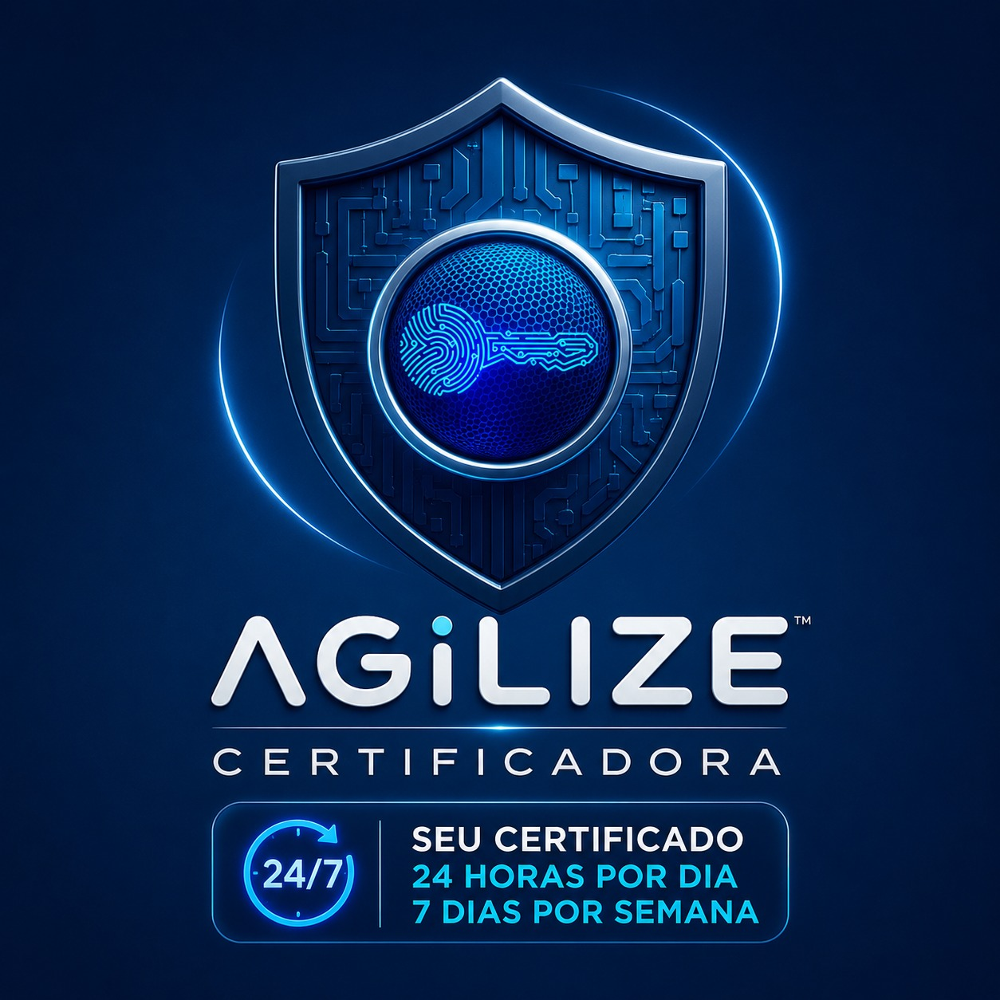

Escolha seu certificado
Conte com nossa orientação para encontrar a opção ideal para você ou sua empresa.
 Área do cliente ↗
Área do cliente ↗SUA IDENTIDADE. SUA SEGURANÇA.
Certificados digitais para você e sua empresa.
Com a agilidade que sua rotina precisa e um atendimento que está sempre por perto.

CERTIFICADOS DIGITAIS
Da sua assinatura à rotina da sua empresa.
Encontre a opção que acompanha você.
Escolha uma opção para consultar o valor. Valores de varejo do certificado. Quando houver mídia ou acessório, a inclusão será confirmada no atendimento.
PROTEÇÃO DE REEMISSÃO
Em situações cobertas, você pode reemitir o certificado sem pagar novamente pelos meses que ainda restavam.
SIMPLES, DO INÍCIO AO FIM
Conte com nossa orientação para encontrar a opção ideal para você ou sua empresa.
Online ou presencial na Grande São Paulo. Escolha a forma mais prática para sua rotina.
A validação e a emissão seguem o procedimento oficial utilizado pelo nosso AGR, na Syngulari.
COMPLETE SUA SOLUÇÃO
Tokens, cartões e leitoras para seu certificado.
Consulte a compatibilidade antes de escolher.
AO SEU LADO, 24 HORAS
Primeira emissão, renovação ou uma dúvida?
Converse com a Agilize.
TIRE SUAS DÚVIDAS
O e-CPF identifica a pessoa física; o e-CNPJ identifica a empresa. Nossa equipe ajuda a confirmar qual atende ao serviço que você precisa utilizar.
Oferecemos atendimento online 24 horas. As condições para validação e emissão serão orientadas pelo AGR, conforme o fluxo oficial aplicável ao seu pedido.
Entre em contato com a Agilize para verificar a modalidade e o procedimento de renovação do seu certificado.